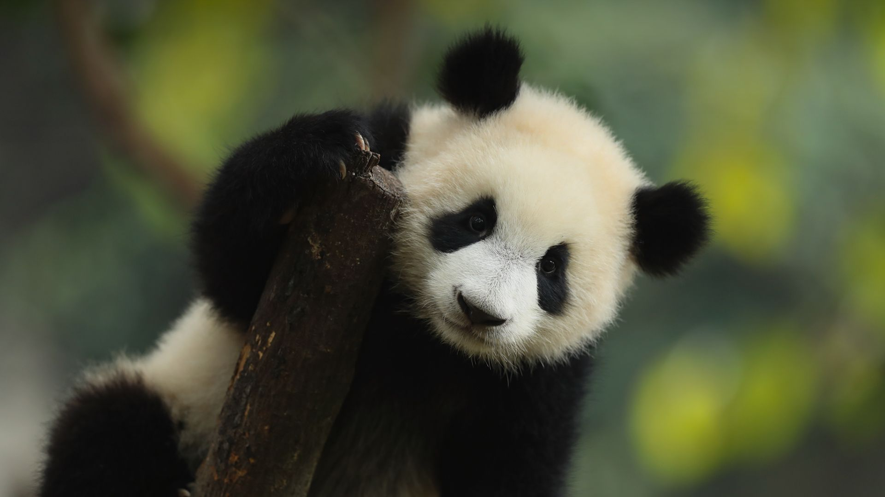

熊猫
大熊猫（学名：Ailuropoda melanoleuca）：属于熊科、大熊猫属哺乳动物，是中国特有种。大熊猫仅有两个亚种，四川亚种和秦岭亚种，主要栖息地是中国四川、陕西和甘肃的山区。雄性个体稍大于雌性。体型肥硕似熊、丰腴富态，头圆尾短，头躯长1.2-1.8米，尾长10-12厘米。体重80-120千克，最重可达180千克，体色为黑白两色，脸颊圆，有很大的“黑眼圈”，标志性的内八字的行走方式，也有解剖刀般锋利的爪子。大熊猫皮肤厚，最厚处可达10毫米。黑白相间的外表，有利于隐蔽在密林的树上和积雪的地面而不易被天敌发现。

百科
大熊猫生活在海拔2600-3500米的茂密竹林里，那里常年气温低于20℃，有充足的竹子，地形和水源的分布利于该物种建巢藏身和哺育幼仔。大熊猫善于爬树，也爱嬉戏。爬树的行为一般是临近求婚期，或逃避危险，或彼此相遇时弱者借以回避强者的一种方式。大熊猫每天除去一半进食的时间，剩下的一半时间多数便是在睡梦中度过。在野外，大熊猫在每两次进食的中间睡2-4个小时。大熊猫99%的食物都是竹子，可供大熊猫食用的竹类植物共有12属、60多种。野外大熊猫的寿命为18-20岁，圈养状态下可以超过30岁。

知识拓展
大熊猫已在地球上生存了至少800万年，被誉为“活化石”和“中国国宝”，世界自然基金会的形象大使，是世界生物多样性保护的旗舰物种。截至2021年1月，中国大熊猫野生种群增至1864只。截至2023年10月，中国旅居国外的大熊猫总数达到63只。列入《中国国家重点保护野生动物名录》一级。